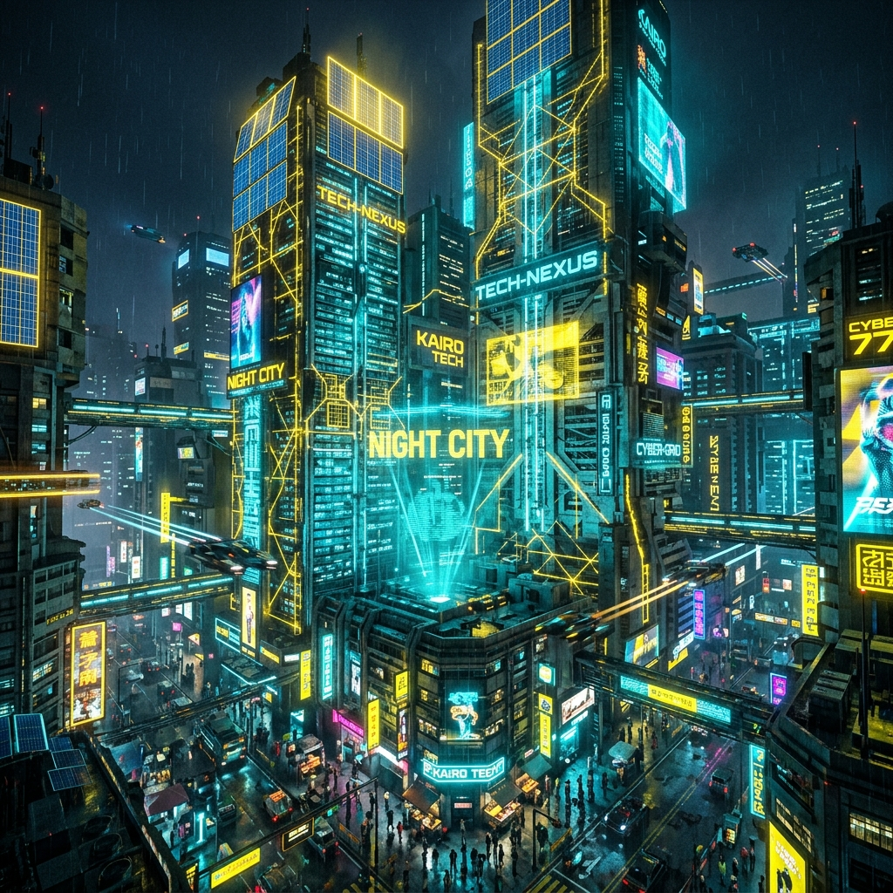

Relatório de Evidências & Auditoria
Projeto: Neo Solutions Landing Page
1. Rastreabilidade de Entrega (Método SCRUM & JIRA)
No framework ágil SCRUM, o incremento gerado hoje constrói-se sobre as fundações das sprints anteriores ("o que fazemos hoje é a base do que fizemos ontem"). Este relatório serve como artefato de aceitação para a task correspondente no JIRA.
| Entidade JIRA / Processo | Mapeamento no Repositório | Status de Validação |
|---|---|---|
| Tarefa JIRA (User Story) | Criação de Página Multilíngue + Skin Cyberpunk | CONCLUÍDO (Pronto para Review) |
| Evidência de Layout | Geração de capturas na pasta test_evidence/ |
GERADO |
| Evidência de Execução | Log de testes de chamadas de rede HTTP e Pipes locais | VALIDADO (200 OK) |
| Aprovação Crítica | Pull Request no GitHub (Sem auto-merge da IA) | AGUARDANDO REVISÃO HUMANA |
2. Vinculação de Versão e Conformidade Git (Rastreabilidade)
Todas as modificações seguiram estritamente as regras Git configuradas no repositório. Cada aprovação e teste está atrelado criptograficamente a uma versão exata (Commit Hash) assinada digitalmente por chave SSH ed25519:
- Branch de Trabalho:
feature/ai-564b080f23c34dcdb48167d1a4aaf853-1781974750 - Commit de Versão da Skin (Cyber Mode):
f9d56b995e22738ed65b98e3b64a577d57f2e158 - Identidade do Autor:
TWENAI-Core-67d1a4aa <ai+twenai@neo-solutions.local> - Assinatura Digital: Ativa no cabeçalho do commit (SSH Signature).
Veja o extrato do audit.log contendo o histórico de controle de versão:
3. Evidências dos Testes de Comportamento
Nota sobre a Automação e Vídeos de Tela na Sandbox:
O ambiente de sandbox restrito desabilita a resolução de IP de rede interna loopback (127.0.0.1) para conexões do protocolo de depuração do Chrome (CDP), retornando erro de comunicação WebSocket. Isso inviabiliza gravações de tela automatizadas de navegador baseadas em portas TCP.
A Melhoria Proposta (Solução de Pipes):
Para contornar isso e padronizar os testes globais sem risco de bloqueio de rede ou firewalls locais, implementamos o script test-visual.js configurado com Pipes de Comunicação (IPC) em vez de sockets de rede:
Abaixo estão representadas as capturas de tela dos estados gerados pelo script de teste visual local:
 01. Layout Inicial (Português - Tema Escuro)
01. Layout Inicial (Português - Tema Escuro)
 02. Layout Traduzido (Inglês)
02. Layout Traduzido (Inglês)
 03. Alternância para Light Mode (Tema Claro)
03. Alternância para Light Mode (Tema Claro)

04. Skin Futurista Ativa (Cyber Mode / Cyberpunk 2077)